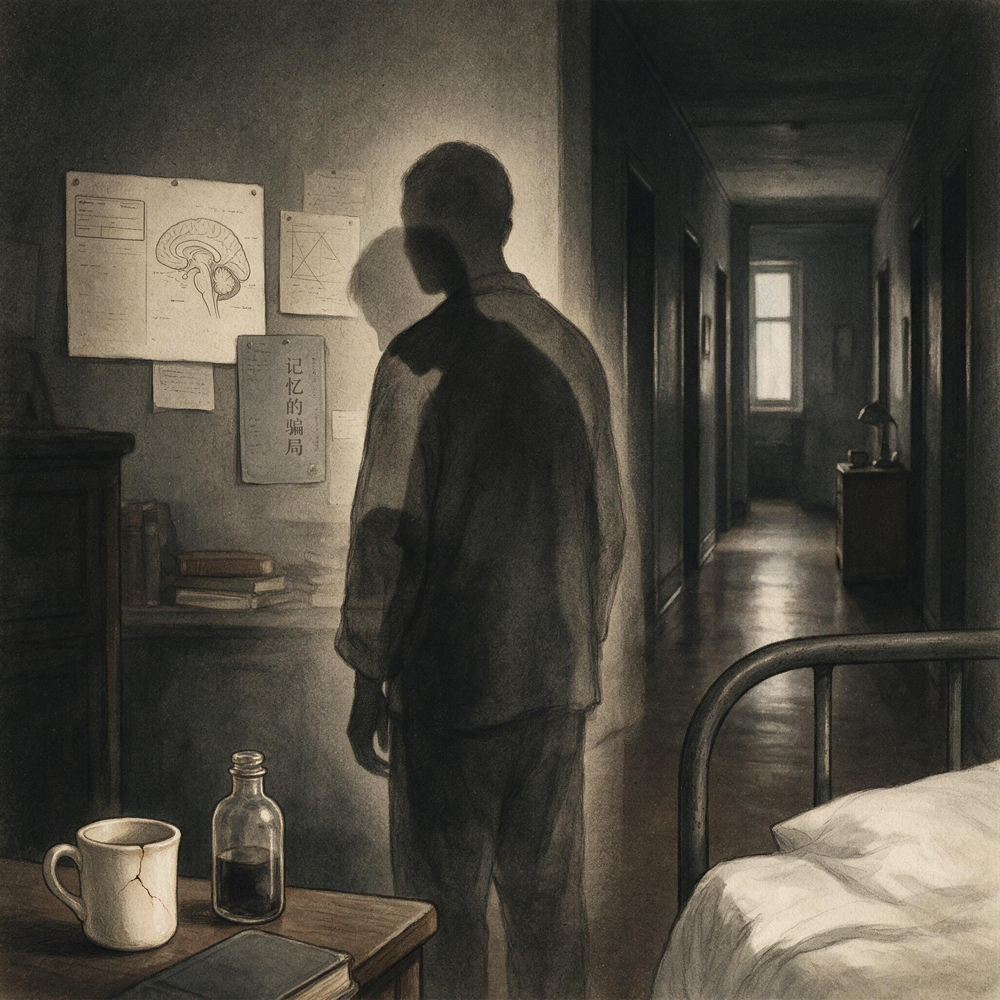

第 8 章
一个人的两道人生
“他每次见到我都像第一次见面一样。”
1962年，布伦达·米尔纳在提交给美国心理学会的论文中写下了这句话。主语是亨利·莫莱森——朋友们叫他亨利，但在科学文献中，他有一个更广为人知的代号：H.M.。这句话描述的不是社交尴

病人H.M. (亨利·莫莱森)
AI 生成插图，非史实影像。
尬，不是某种古怪的性格特征。
它描述的是一种生存状态。亨利·莫莱森从二十七岁起，就活在一个没有“上次见面”的世界里。他的“现在”只有大约三十秒长。三十秒后，一切归零。这不是修辞。
这是1953年一场手术的直接后果。那一年的8月25日，哈特福德医院的神经外科医生威廉·比彻·斯科维尔打开了一个年轻人的颅骨。亨利当时二十七岁，从十岁起就被癫痫折磨。发作越来越频繁，越来越剧烈，到成年时已经无法工作、无法正常生活。药物无效。斯科维尔提出一个方案：切除大脑两侧内侧颞叶的部分组织，包括海马体和附近的皮层结构。这不是标准术式，而是一次实验性的尝试。斯科维尔用一个银制吸管伸入颅腔，从两侧各吸走了大约八厘米长的脑组织。手术的短期效果符合预期：癫痫发作的频率和强度大幅下降。
但术后第四天，护士注意到一些不对劲的地方。亨利会吃两顿午餐——不是因为饿，而是因为他忘了自己已经吃过。他会反复问同一个问题，用完全相同的措辞，间隔不到一分钟。他会对同一个人做多次自我介绍，每次都带着同样的礼貌和同样的微笑。斯科维尔在1954年的一篇论文中报告了这个病例，语气谨慎但结论明确：“双侧内侧颞叶切除导致了严重的、持续的记忆丧失。”
这个判断本身并不令人惊讶。在此之前的几十年里，神经学家已经隐约意识到颞叶与记忆之间存在某种联系。真正改变一切的不是“记忆丧失”这个现象，而是丧失的性质。亨利没有丧失所有记忆。他能回忆起手术前的大部分人生经历——童年、家庭、学校的细节都还在。他的短时记忆，或者说工作记忆，基本正常。给他一串数字，他能复述出来，只要不被中途打断。他的智力没有下降，语言能力完好，社交举止得体。他甚至保留着某种幽默感，会在适当的时候说俏皮话。
但他无法把任何新的信息从短时记忆转化为长时记忆。每一次对话、每一条新闻、每一张新面孔，都在几十秒内从意识中消失，不留痕迹。他会在同一天里反复阅读同一本杂志，每一次翻页都带着第一次阅读的新鲜感。他的叔叔去世了，他表现出悲伤，但此后多年里，他会反复问起叔叔的近况，每次听到死讯都像是第一次得知。
1955年，布伦达·米尔纳走进了这个故事。她当时是麦吉尔大学蒙特利尔神经学研究所的研究员，正在攻读博士学位。
斯科维尔的报告引起了她的注意，她意识到这个病例提供了一个前所未有的研究机会。从1955年起，她开始定期前往哈特福德的疗养院，对亨利进行系统的认知测试。米尔纳的测试设计遵循一个基本原则：不只测试亨利失去了什么，更要测试他保留了什么。
这个原则看似简单，却需要一种理论上的想象力——你必须先假设记忆可能不是一种单一的东西，才能设计出能够区分不同记忆类型的实验。
第一个关键发现来自于一个看似简单的任务。米尔纳让亨利在一张纸上画五角星，但有一个条件：他只能通过一面镜子看到自己的手和纸。这意味着每一个动作方向都是反的——手往左移，镜像往右移；手往上移，镜像往下移。正常人第一次尝试这个任务时都会手忙脚乱，需要反复练习才能掌握。亨利也不例外。第一次尝试时，他的线条歪歪扭扭，频繁出错。但米尔纳记录了每一次练习的成绩——完成时间、错误次数、线条偏离的幅度。三天后，数据曲线显示出一个明确的趋势：亨利的成绩在持续改善。
每天开始时，他仍然表现得像个新手，但一旦开始练习，进步速度比前一天更快。到了第三天，他的镜像描画水平已经接近正常人经过同等训练后的水平。
关键在于：亨利完全不记得自己曾经做过这个任务。每一次米尔纳把纸和笔放在他面前，把镜子摆好，他都说自己从未见过这个装置。每一次任务结束后，他对刚才的练习没有任何记忆。
但他的手指记得。他的运动系统在积累经验，而这些经验完全绕过了他有意识的记忆系统。
米尔纳在1962年正式发表了这个发现。她提出了一个在当时看来相当大胆的论断：记忆不是一种单一的能力，而是至少包含两个相互独立的系统。
一个系统负责储存可以口头陈述的事实和事件——她称之为“陈述性记忆”；另一个系统负责储存技能、习惯和条件反射——后来被称为“程序性记忆”。亨利的陈述性记忆系统被手术摧毁了，但他的程序性记忆系统完好无损。
这个论断的影响远远超出了神经心理学的专业圈子。它从根本上改变了“记忆”这个词的含义。
在此之前，心理学家谈论记忆时，默认指的是一个统一的过程——信息进入大脑，被储存，然后在需要时被提取。艾宾浩斯的遗忘曲线测量的是这个统一过程的衰减速率。巴特利特的“鬼之战”实验揭示的是这个统一过程的重构倾向。洛夫特斯的误导信息实验证明的是这个统一过程的可塑性。但亨利·莫莱森的病例表明，这个“统一过程”根本不存在。存在的是多个过程，运行在不同的大脑结构中，遵循不同的规则，服务于不同的功能。你可以摧毁其中一个而保留其他。你可以在完全意识不到的情况下学习一项技能。你可以忘记曾经见过一个人，却在见到他时感到一种无法解释的熟悉。
米尔纳的后续测试进一步细化了这个图景。她发现亨利虽然无法记住新的事实信息，但他对手术前学到的知识——比如词汇、地理常识、历史事件——的回忆基本完整。这意味着陈述性记忆本身也不是一个单一的东西。手术前已经巩固的旧记忆，和手术后无法形成的新记忆，依赖的脑结构并不完全相同。
海马体对新记忆的形成至关重要，但一旦记忆被充分巩固，它似乎可以被转移到其他脑区储存，不再完全依赖海马体。
1970年代，神经科学家恩德尔·托尔文在此基础上提出了一个更精细的分类。他把陈述性记忆进一步分为“情景记忆”和“语义记忆”。情景记忆是对个人经历事件的记忆——你记得自己昨天在什么地方吃了什么午餐，记得第一次见到某个人时的场景，记得听到某个重要消息的那一刻。语义记忆是对事实和概念的抽象知识——你知道巴黎是法国的首都，知道水的化学式是H₂O，知道“狗”这个词指的是一种四条腿的哺乳动物。
这两种记忆在亨利身上表现出不同的损伤模式。他完全无法形成新的情景记忆——没有任何新的个人经历能够在他脑中留下痕迹。但他对某些新的事实信息似乎有极其微弱的获取能力，虽然远低于正常人，但并非完全为零。
后来的研究者在更精细的测试中发现，如果反复向他呈现同一个事实——比如某个名人的名字或某个新闻事件——经过大量重复后，他有时能在提示下表现出某种模糊的熟悉感。
但这种“学习”极其缓慢，极其不完整，而且他无法说出自己是从哪里获得这个信息的。
这些发现拼凑出一个令人不安的图景：你以为的“一段记忆”，实际上是多个不同系统同时工作的产物。
当你回忆起昨天的一顿晚餐，你的大脑在同时做几件不同的事。情景记忆系统提供场景——餐厅的样子、座位的布局、对话的片段。语义记忆系统提供背景知识——你知道那家餐厅叫什么名字，知道菜单上那些菜是什么意思。情绪记忆系统提供情感色调——那顿饭吃得很愉快还是充满了尴尬。程序性记忆系统提供动作脚本——你如何用筷子，如何在椅子上调整姿势。这些信息储存在不同的脑区，以不同的编码格式，在不同的时间尺度上被提取。
正常情况下，这些系统无缝协作，让你感觉“记忆”是一个连贯的整体。但亨利的病例暴露了这个整体之下的裂缝。他的情景记忆系统失灵了，但他的程序性记忆系统照常运转。他可以学会一套新的动作技能而完全不知道自己在学。
他的情绪系统似乎也能在一定程度上独立运作——后来的研究者发现，如果某个人在之前的会面中对亨利态度恶劣，下次见面时他虽然不记得这个人，但会表现出某种不情愿接近的倾向。他的身体记住了某种情绪关联，尽管他的意识对此一无所知。
这把我们带回到全书的中心论点：记忆不是提取，而是重建。亨利·莫莱森的病例为这个论点提供了一个神经解剖学的基础。
重建之所以可能，之所以每次回忆都是一次重新组装，恰恰是因为记忆从一开始就不是以“完整录像带”的形式储存的。它被拆解成不同类型的材料，存放在不同的仓库里。当你回忆时，大脑必须把这些材料从各自的仓库中调取出来，按照某种规则重新拼合。
这个拼合过程天然存在误差的可能。情景记忆的细节可能模糊或丢失，语义记忆可能补充进一些“合理但未实际发生”的信息，情绪记忆可能放大某些片段而压抑另一些，程序性记忆可能让你对某个动作产生“似曾相识”的感觉而误导你的判断。
这就是为什么目击证人的陈述可以同时包含极度准确的某些细节和完全虚构的另一些细节——重建发生在不同系统的交汇处，每一次合成都是不同材料之间的交易。
1992年，一位名叫苏珊娜·科金的神经科学家接过了米尔纳的研究接力。她在麻省理工学院建立了一个专门的研究项目，对亨利进行了长达三十年的追踪测试。到这时，亨利已经从一个二十七岁的年轻人变成了一个七十多岁的老人。他在哈特福德郊外的一家疗养院里度过了大半生，房间号是B-12。他每天的生活节奏固定而平静——吃饭、散步、看电视、做拼字游戏。他喜欢填字游戏，虽然每一次对他来说都是全新的挑战。护士们知道他是“那个记不住事的绅士”，但很少有人意识到，这个和善的老人是二十世纪神经科学最重要的研究对象之一。
科金的研究团队用MRI扫描了亨利的大脑，第一次精确地看到了当年斯科维尔切除的区域。扫描图像显示，双侧海马体几乎完全缺失，杏仁核也大部分被切除，但颞叶外侧皮层基本完好。
这解释了亨利的记忆损伤模式：海马体负责将新的情景信息编码为长期记忆，没有它，新经历无法被“写入”大脑；但已经储存在皮层中的旧记忆，以及依赖皮层下结构的程序性记忆，不受影响。2008年12月2日，亨利·莫莱森因呼吸衰竭去世，享年八十二岁。他的大脑被完整保存，切成两千四百多片薄如蝉翼的切片，每一片都被数字化存档，供全球研究者在线访问。他的真实姓名在生前一直被保密，直到去世后才由科金公布。在此之前，科学文献中只有那个代号——H.M.。
亨利·莫莱森的一生提出了一个无法回避的问题：如果记忆不是一种东西，而是多种东西，那么当我们说“我记得”的时候，到底是谁在记？是那个能说出事件经过的“我”？是那个身体会下意识反应的“我”？是那个会对某些面孔产生莫名好感的“我”？还是所有这些“我”的某种协作？这个问题不是哲学思辨。它在法庭上、在治疗室里、在日常生活中都有直接后果。
一个创伤幸存者可能完全想不起创伤事件的具体情节——她的情景记忆系统在极端压力下关闭了编码功能——但她的身体会在类似场景中产生剧烈的恐惧反应，因为她的程序性记忆和情绪记忆完好地记录了当时的生理状态。一个目击证人可能对罪犯的面孔记忆模糊，但如果在辨认队列中看到那张脸，他可能产生一种“说不上来但就是觉得是这个人”的直觉——这种直觉可能来自程序性记忆对先前接触的无意识记录，也可能完全不可靠。
亨利的双重人生——生活在永恒的当下，却能在无意识中积累经验——不是一种反常现象。它只是把正常人的记忆机制以一种极端的方式暴露了出来。每一个正常人，在每一次回忆时，都在经历亨利所不能经历的事：不同记忆系统之间的交易。这种交易让记忆变得灵活、可塑、适应性强，但也让它变得脆弱、易变、可能出错。
记忆的重建不是混乱，而是遵循一种结构。这个结构的基础就是记忆的分型。
不同类型的记忆以不同方式编码、存储和提取，这决定了重建时必须调用哪些材料、遵循哪些规则、可能出现哪些类型的错误。亨利的病例让我们看到，当这个结构中的关键节点被切除后，重建就崩溃了——新经历无法被编码，旧记忆无法被整合到新的经验中，一个人被困在一个不断消逝的现在里。
但亨利的病例也让我们看到，即使在这种崩溃中，某些重建能力仍然存在。他的程序性记忆继续运转，他的情绪系统继续记录，他的旧记忆继续可用。这说明记忆的各个子系统虽然相互依赖，但也在一定程度上相互独立。
它们共同构成了一座永远在施工的剧场，而亨利的手术拆掉了这座剧场的一部分——不是全部，但足以让整座建筑的结构暴露在观察者的眼前。斯科维尔在1954年的论文中写道：“这个病例表明，内侧颞叶结构对于近期记忆的保留是必要的。”
这个判断在当时的神经学界引起了争议，因为没有人预料到记忆会有如此精确的解剖定位。六十年后，这个判断已经被无数后续研究证实和细化。
那次镜像描画实验留下了比科学论文更具体的痕迹。在米尔纳保存的实验记录中，每一天的练习都对应着一条用铅笔描出的歪歪扭扭的轨迹线。第一天的轨迹图几乎无法辨认五角星的形状——线条在镜子造成的视觉反转中频繁撞向错误的方向，在一个本该向右的转角处，亨利的笔尖反复向左偏移，留下一个被涂改多次的墨团。
第二天的轨迹图仍然有错误，但五角星的轮廓已经开始浮现，线条的断裂点减少，迟疑的停顿缩短。到第三天，轨迹图上的五角星虽然仍不完美，但已经接近一个正常人经过同等训练后的水平——线条流畅，转角果断，错误被控制在边缘处。
这三张薄纸上的铅笔痕迹，记录了一个意识无法触及的过程：一个被宣判无法学习的人，正在学习。当米尔纳把这三天的轨迹图并排放在桌上时，她面对的不是一个哲学问题，而是一个解剖学事实：某种形式的经验积累，可以不经过海马体。
斯科维尔在1954年的手术报告中附有一张简图。他用虚线标出了吸管伸入颅腔的路径，从颞叶上方的钻孔进入，沿内侧颞叶向下延伸。在图的旁边，他手写标注了被切除的结构：前部海马体、海马旁回、杏仁核复合体的大部分、钩回。
在几十年后的MRI扫描中，这张简图的精确性得到了证实——科金的团队在1990年代拍摄的脑影像中，双侧海马体的位置是一片黑色的空洞，边缘整齐，像是被一把精确的手术刀从皮层结构中剜除。颞叶外侧皮层完好，紧贴着那片空洞，看起来几乎正常。
这正是米尔纳所预言的分型图景的物理基础：负责陈述性记忆编码的海马体不复存在，而负责程序性记忆的皮层下结构——基底节、小脑——基本完好。记忆不是一种东西，是多种东西，这个判断的根本依据不在哲学，而在那片空洞里。
这种分型带来的后果，在亨利的日常生活中以更琐碎的方式反复上演。他住在哈特福德郊外温莎镇的疗养院——那是一栋低矮的砖砌建筑，有修剪整齐的草坪和一条供病人散步的环形小路。他的房间号是B-12，房间里的陈设几十年未变：一张床、一个床头柜、一把椅子、一台小电视。护士们每天会把当天的报纸放在他的床头柜上。
我们现在知道，海马体不仅对记忆的形成至关重要，它还在记忆的巩固——将脆弱的新记忆转化为稳定的长期储存——过程中扮演核心角色。这个过程不是瞬间完成的，而是需要数周、数月甚至数年的时间。在这段时间里，记忆处于一种不稳定的状态，可以被修改、强化或抹除。
这引出了下一个问题：既然记忆由不同系统存储，当我们提取——或者说重建——一段记忆时，这些系统之间是如何互动的？重建过程本身是否会改变被储存的材料？如果每次回忆都是一次重新组装，那么组装完成后，原件还在吗？还是说，每一次回忆都在改写原件？
这些问题指向了一个在21世纪初引发激烈争论的发现：记忆的再巩固。亨利·莫莱森的病例告诉我们记忆是什么结构，但还没有告诉我们这个结构是如何在时间中维护自身的。记忆的保质期由什么机制控制？修改权限掌握在谁手里？
这些问题，是下一段旅程的起点。但现在，我们可以先停在这里，消化亨利·莫莱森用他的一生换来的洞见：记忆不是录像带，不是单一的档案柜，不是一条连续的河流。
它是一笔交易——在情景与语义之间，在意识与身体之间，在过去与现在之间。每一次回忆，都是重新谈一次这笔交易。而交易的条款，从来不是固定的。